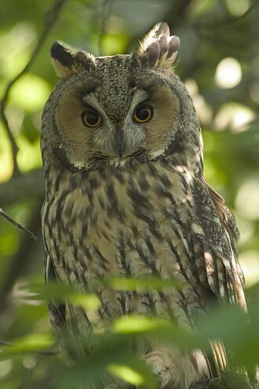

Ряд птахів, до якого належать нічні хижі птахи. Вони мають великі очі, у більшості — бінокулярний зір. У них також добре розвинений слух. Як і в інших хижих, у сов гачкоподібно загнутий дзьоб та гострі кігті на ногах. Це нагніздні птахи. Пір'я у сов дуже м'яке, тому літають вони безшумно. Ряд нараховує близько 200 сучасних видів, поширених на всіх континентах, за винятком Антарктиди та деяких ізольованих островів. В Україні живе близько 13 видів совоподібних. Найпоширеніші — сова сіра, сова болотяна, сова вухата та сич хатній. Найбільша сова в Україні — пугач — стала рідкісною і занесена до Червоної книги України. Сови — осілі або кочові птахи. Вони дуже корисні та потребують охорони.
Населяють переважно лісові території у помірному та жаркому кліматичних поясах, охоче селяться в культурному ландшафті. У позагніздовий час ведуть поодинокий спосіб життя. Гніздяться окремими, віддаленими одна від одної парами у дуплах та гніздах інших птахів, тріщинах, нішах старих кам'яних будівель. У кладці 1−5 білих яйця в залежності від географічного положення (у південних регіонах розміри кладки менші) та чисельності гризунів. Насиджування починається з відкладання першого яйця та триває 4 тижні, насиджує самка. Пташенята починають літати у віці шести тижнів, але першу осінь тримаються разом з батьками.
Живляться переважно гризунами, але також птахами, земноводними та плазунами, дрібними безхребетними. У несприятливі за погодою та кормовими умовами роки кочують, у «мишині» роки осілі.Вухасті сови в основному активні протягом ночі, але болотяні сови також крепускулярні. Більшість видів гніздяться на землі, але вухата сова (Asio otus) гніздиться у старих паличних гніздах ворон, воронів, сорок та різних яструбів. Приносять користь знищенням шкідливих гризунів.
На гору